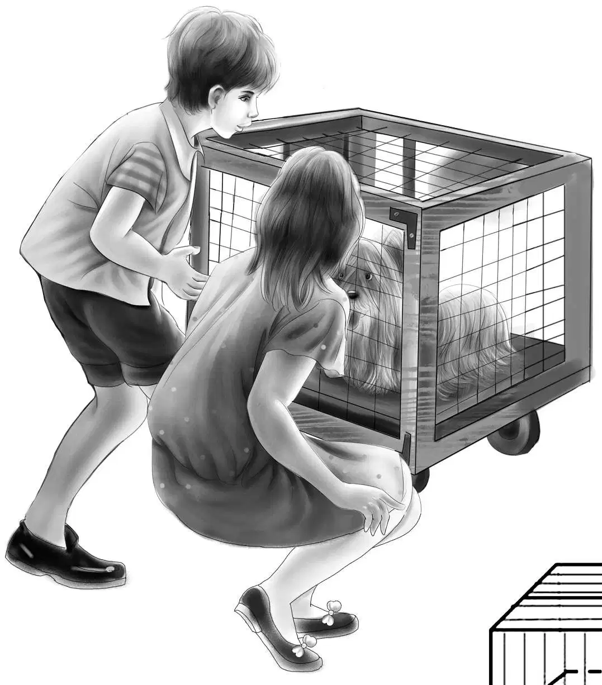
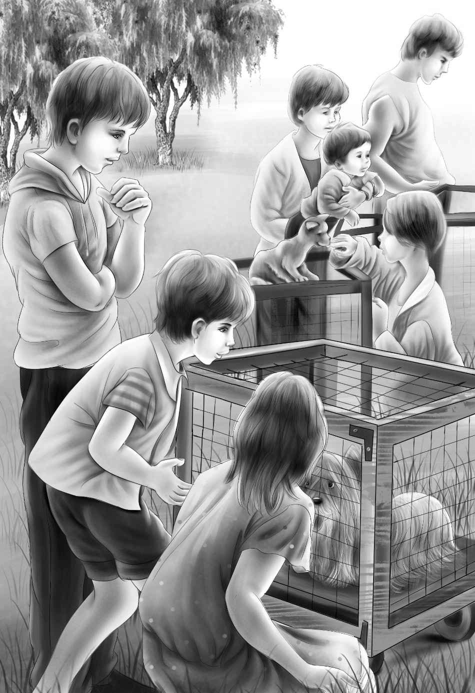
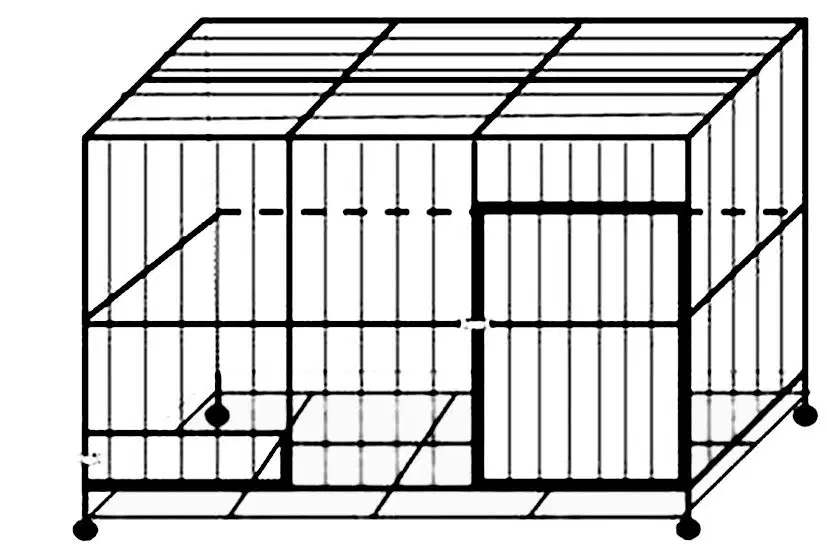
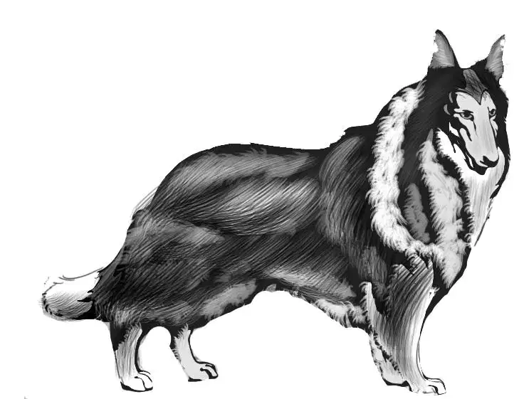

Show Dog

奥登兄妹安全到家后，发现爷爷对小狗的事情早已知道得一清二楚——他也看到了报纸上的照片。不过维莉还是把雨夜空宅的经历给爷爷讲了一遍，杰西则告诉他路边的菜摊以及罗伊的事儿，而班尼专门讲了大个子小铺。
听完后，奥登先生不禁问道：“班尼，有这么多奇遇，你还满意吗？”
“噢，还算满意。”班尼答道，“只是还剩最后一个谜团没有解开——灰灰是怎么从停车场跑到我们过夜的空宅子里去的？”
“这我就帮不上忙啦。”奥登先生说，“不过我相信，这个谜团最终也会被你们解开的。”
不久，杰西接到了兰多太太的电话。
“明天阿什比的狗展就开幕了。”兰多太太说道，“我们的小狗有了个新名字，不过我已经答应先不告诉你们。怎么样，你们能来吗？”
杰西笑了起来：“我可以代表所有人回答：当然会。我们会开车过去的。”
“那先到我家会合吧！”兰多太太说，“这样你们就可以先跟卡尔认识一下。还有，咱们会开两辆车过去。”
“那就这样说定了。”杰西说。
“好。”兰多太太说，“我想让你们看看，艾瑞克是怎样指挥小狗的，真是有趣得很。”
第二天，亨利开车朝兰多太太家驶去。途中，班尼说道：“不知道他们给灰灰换了个什么名字。我可不想费脑筋去猜，反正不会叫小影儿就是了。”
“待会不就知道了？”维莉说。
奥登兄妹一走进兰多家的院子，卡尔便跑了出来，这是一个脸上长着小雀斑，身穿印有“莫霍克夏令营”字样T恤的男孩。
“你们一定是奥登兄妹吧？”男孩叫了起来，“我是卡尔。”
大家进了屋，卡尔的艾瑞克舅舅跟奥登兄妹一一握了手。
“快跟我讲讲，”艾瑞克舅舅说道，“小狗离开停车场之后，是怎么找到你们的？”
“我们也没弄明白，”杰西答道，“这个谜团怕是永远也解不开了。”
“放心，总有一天会水落石出的。”班尼说。
“待会儿你们就能见到灰灰了，它现在可漂亮啦！”卡尔说道，“它洗了澡，梳了毛，爪子和趾头都被打理得清清爽爽、干干净净。”
“我都等不及啦！”维莉说道。
“不是给它取了个新名字吗？”班尼问道。
“这个也要待会儿再告诉你们。”卡尔调皮地眨了眨眼睛，“现在，咱们该出发啦！”
亨利开车跟着兰多一家来到了阿什比，停车时他遇到了点小麻烦，于是兰多一家便先带着灰灰进了展馆。
阿什比的狗展在一个大厅里举行。奥登兄妹进去时，看到一名接待员正站在门口。
“快请进吧！”那人招呼道，“你们的朋友就在那边。”他指了指一块大标牌，只见上面写着：
凯斯梗专区
牌子下面则放着两只笼子。
“那个接待员好像认识咱们呢，”班尼说，“真是奇怪。”
“看哪！”维莉突然叫了起来，“灰灰的笼子上写着什么？是它的新名字！”
只见一个大大的名牌上写着：
灰灰
单车小狗
灰灰的笼子旁边围了不少人。
有人说道：“这就是那只被偷的小狗。”
“并没有被偷。”另外的人说。
“是谁偷的？”
“你们在说什么啊？”
“没看报纸吗？是四个骑单车的孩子发现了它。”
兰多太太冲孩子们笑了起来：“可能你们还不知道，这里的人都看到了照片——就是你们骑着单车，和灰灰在一起的那张。明天我们会在报纸上登一个告示，声明灰灰是你们找到的，并没有被人偷走。”

一见到奥登兄妹，灰灰顿时欢快起来，它几次想从笼子里挣出来，可惜没有如愿，无奈之下，它只好隔着笼子，舔了舔他们的手。
“一看见这笼子，我就想起大个子来了。”维莉说道。
“表演马上要开始了。”艾瑞克叔叔说道，“待会由我来指挥灰灰，不过明年就要看卡尔的了，毕竟他才是小家伙的主人。”
“灰灰还用指挥吗？”班尼问道，“它这么听话，任何人都可以做到啊！”
“待会儿你就明白了。”艾瑞克叔叔说道，“指挥的意思是让它表演，要告诉小狗，它究竟该做些什么。”
这时，孩子们发现另外一只狗狗也被放到灰灰所在的专区。那也是一只凯斯梗，名叫灰姑娘——因为它全身的毛色跟炉灰相似，还夹杂着浅浅的蓝色。
表演很快开始了。孩子们来到人群中，各自找位子坐了下来，舞台周围拉起了护索。
展馆内人人兴奋异常，每个人都希望自己的狗狗夺得冠军，但是大家的心里都清楚，冠军非单车小狗灰灰莫属。
馆内汇集了各式各样的狗狗，有体型巨大、毛发柔软的白色大狗，也有个子娇小的巴掌犬，它们都接受过精心的训练。
率先出场的是一只大丹犬，音乐响起，主人用链子拉着它，狗狗缓缓走到场地中央，高昂着头，垂着尾巴站定。
随后出场的是灰姑娘。
“哦，天哪！”杰西说道，“听听这掌声！”
接着就是灰灰上场了。艾瑞克叔叔的表现得心应手，灰灰也配合得恰到好处。
“听听这次的掌声！”亨利叫道，“比灰姑娘的还热烈！”
评委仔细地打量着每一只狗狗，记录下它们的长相和表现。
表演结束后，由评委上场，在笼子上系上丝带，以此确定名次，想看看冠军究竟花落谁家的观众则紧随其后。然而出乎所有人的意料，单车小狗灰灰只赢得了代表亚军的红丝带，而代表冠军的蓝丝带，则授予了灰姑娘。
“没什么啦！”卡尔自我安慰道，“反正比起蓝色来，我更喜欢红色哩。”
“我可不这样想。”艾瑞克叔叔说道，“但我也并不意外。”
“您也不感到意外？”杰西问兰多太太。
“不意外。依我看哪，这次失踪影响了灰灰的表现。它被雨水淋过，没有立即吹干，也没有马上洗澡。而这种比赛，只有状态最佳的狗狗才能赢得蓝丝带。”

“没什么啦，还有来年呢！”艾瑞克叔叔说道。
突然，班尼大声叫了起来：“看哪！双胞胎，简直是一模一样啊！”
“一个穿着粉色裙子，一个穿着蓝色的。”维莉低声说道。
“她们朝这边来了。”杰西说，“看样子是在找灰灰呢。”
只见人群中一个笑意盈盈的妈妈带着两个女孩走了过来。
“我们想看看我们的小狗。”穿粉色裙子的女孩说道，“我叫小蕊。”
“你们的小狗？”班尼问道，“你是说单车小狗吗？”
“是啊，它其实也算不上是我们的，只不过我们见过它两回，而且我们一直很想它。我叫小卓。”
她们的妈妈补充道：“你们叫我付太太好啦，我的两个女儿好喜欢这只小狗，之前在伊塞克的停车场就见过它。”
“是啊，没错。”小蕊说，“它当时正在停车场上跑呢。”
“你们当时在哪里？”艾瑞克叔叔问道。
“我们坐在旅行车的后座上。”小卓答道，“我们看得很清楚，还叫了它好多次，可它还是跑开了。后来在乡村的菜摊上，我们又见过它一次。”
“这就说得通了。”班尼得出了结论，“看来灰灰不是被人偷走的。”
“可是别忘了，有人是动过这个念头的，班尼。”亨利提醒道。
“我当然不会忘。”班尼说。
艾瑞克叔叔继续问道：“那天在停车场，灰灰到底遇到了什么？你们看到了吗？”
“看到了。”小蕊说。
“不，没看到。”小卓说道，“我们只看到它跑出停车场，穿过了马路。”
“还好它没被撞到。”小蕊补充了一句。
“说得是啊。”艾瑞克叔叔说着，神情严肃起来，“应该是安安全全地过了马路。之后它朝哪儿跑了？你们看到了吗？”
“嗯，看到了！有条偏僻的捷径直通伊塞克，您知道吗？它就是沿着那条小路跑掉了。”
“第二天晚上，下起了大雨，我们好担心它能不能找到回家的路。后来是你们找到它的？”
“是它找到了我们。”班尼说，“为了避雨，小狗从空宅子的窗子外爬了进来，屋子就在那条乡村小路上。”
“后来你们又在菜摊见到它了，对吧？”亨利问道。

“对啊。”小卓回答道，“我爸说，要是来年还办狗展，灰灰一定能得冠军，所以我们特地过来跟它打个招呼。”
灰灰似乎还记得两个小女孩。它没法子从笼子里出来，最后只好舔了舔她们的手，呜呜叫了两声。
这时，一名警察朝奥登兄妹走了过来，之前他一直在展会上到处巡视。
“孩子们，能不能帮我个忙？”他对亨利说道，“我听说你们碰到过一男一女，这两人几次想把小狗弄到手，对吗？”
“没错。”亨利答道。
“如果再次见到这两个人，你们还认得出来吗？”警察问道。
“那当然！”班尼说。
警察看了看奥登兄妹，脸上露出了笑容：“是这样的，警局抓获了一对夫妇，明天你们跟我过去辨认一下，看是不是你们遇到的那两个人。”
“我们一定会去的。”亨利说。
“那就太好啦！”警察眨了眨眼，“大家都没意见吧？”
“当然没意见！”杰西说道，“要知道，我们遇到过他们两次，他们每次都在打小狗的主意呢！”
“很好。”警察说，“他们被抓住的时候，身边还带着偷来的两只狮毛狗和一只苏格兰犬，如果罪名成立，他们会被驱逐出境，还要交一大笔罚金。”
“还真是罪有应得。”班尼说，“但愿他们以后不会再犯。”
“当然不会。”警察笑了起来，“毕竟西海岸也有警察嘛。”说完，他便转身离开了。
“这下好了，付太太。”杰西说，“事儿总算差不多都清楚了。”
狗展结束后，大家纷纷忙着收拾东西，准备离开。兰多太太带着灰灰回了家，奥登兄妹也朝绿野镇赶去。
刚一到家，他们就看见爷爷正在门廊里等着他们。“狗展好看吗？”他问道。
孩子们坐了下来，将经历的事情一一告诉爷爷。
维莉讲到了灰灰的新名字，又讲到如何在双胞胎的帮助下，破解了最后一个谜团。
“可惜灰灰没有拿到冠军，还真让人有点失望啊！”班尼说道，“明明它的人气最旺。”
“我也觉得有些遗憾。”爷爷说道，“不过，凡事都是有原因的，班尼。要记住，没有人可以永远第一。”
爷爷这句话，班尼·奥登牢牢地记在心里，一直都没有忘。
正说着，望望突然出现在门口——它也想见小主人了。班尼打开纱门，将它放出来，望望便趴到门廊上。
“你好啊，望望。”班尼蹲了下来，挠了挠狗狗乱蓬蓬的脑袋。望望抬起了鼻子。
“我还是最喜欢你，望望。”班尼说道，“你既不哼唧，也不嗷嗷，更不瞎汪汪……”
话音未落，大家都哄笑起来。你们猜这是为什么？因为望望恰好汪汪地叫了起来。